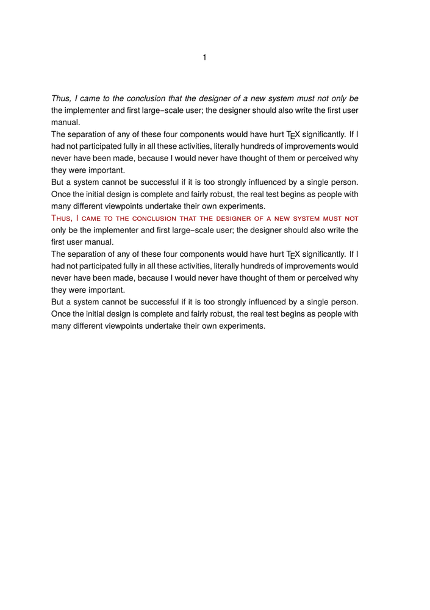
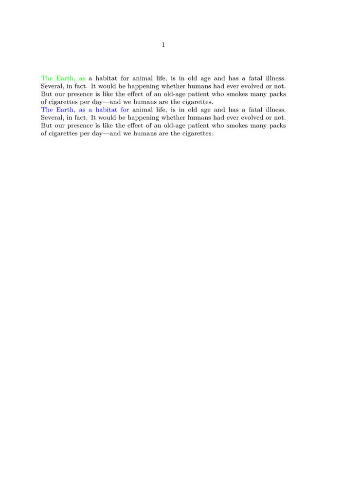
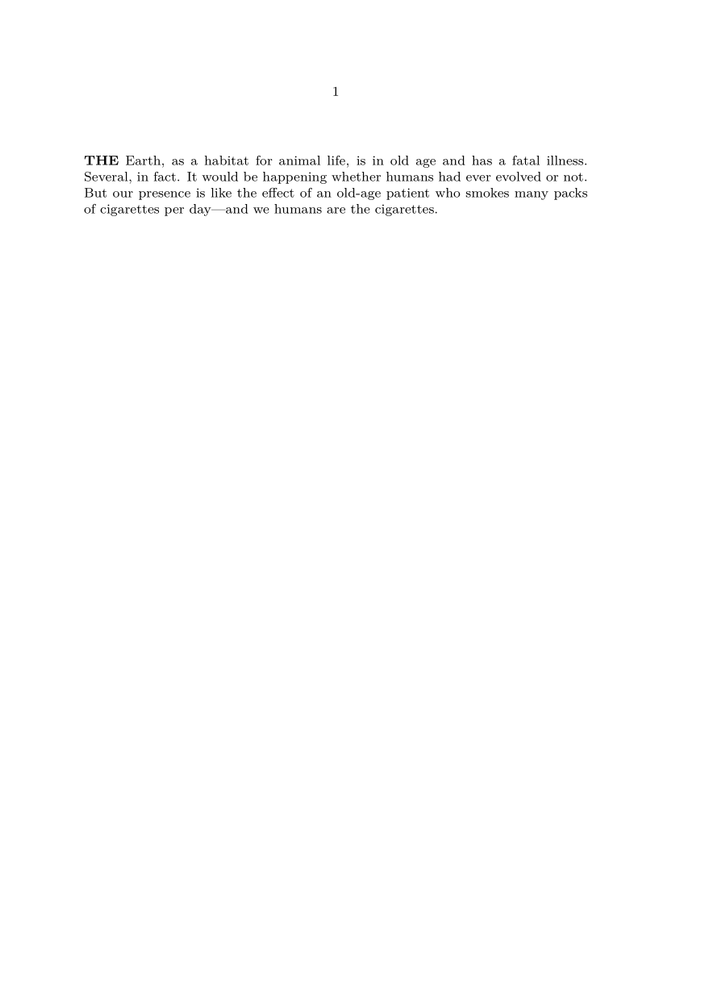

Syntax (autogenerated)
| \definefirstline[...][...][...=...,...] | |
| [...] | name |
| [...] | name |
| ...=...,... | inherits from \setupfirstline |
Syntax
| \definefirstline[..][] | |
| \definefirstline[...][...][...=...] | |
| [...] | name of firstline style |
| [...] | name of firstline style to inherit from |
| alternative | line word |
| n | integer: number of words to affect |
| style | Style Alternative |
| color | IDENTIFIER: color name |
Description
Define a style to apply only to the first line of a paragraph.
Once defined, the style can be applied by invoking
\setfirstline on a paragraph.
One of two methods can be requested by setting the keyword
alternative:
- line applies the style to the entire line,
-
word
applies the style only to the first
nwords of the first line.
NB: The style substitution takes place on node level, hence small capitals require a font which implements them as a feature, not as a separate file (e. g. as of 2013 Latin Modern won’t do).
Examples
Bold and Small Caps
Typeset the first line once in bold, and then in small caps:
-
\setupbodyfont [heros] %% important: smallcaps capable font! \definefirstline [italicfirstline] [ alternative=line, style=italic, ] \definefirstline [smallcapsfirstline] [ alternative=line, color=darkred, style=smallcaps, ] \starttext \setfirstline[italicfirstline] \input knuth \par \setfirstline[smallcapsfirstline] \input knuth \par \stoptext
- 
To affect only the first three or six words change to the alternative
word and set the parameter n to the desired value:
-
\definefirstline [threegreenwords] [ alternative=word, color=green, n=3, ] \definefirstline [sixbluewords] [ alternative=word, color=blue, n=6, ] \starttext \setfirstline[threegreenwords] \input ward \par \setfirstline[sixbluewords] \input ward \par \stoptext
- 
Changing Case
Technically, \WORD is not a style, so to configure words in uppercase a different approach is necessary. The style can be defined in terms of a Lua handler, such as:
-
\definealternativestyle[UpperCase][{\bf\uppercasing}][]
-

Where the handler code resembles:
-
\startluacode fonts.handlers.otf.addfeature { name = "uppercasing", type = "substitution", prepend = true, data = characters.uccodes } fonts.handlers.otf.addfeature { name = "lowercasing", type = "substitution", prepend = true, data = characters.lccodes } \stopluacode \definefontfeature[lowercasing][lowercasing=yes] \definefontfeature[uppercasing][uppercasing=yes] \unexpanded\def\uppercasing{\addff{uppercasing}} \unexpanded\def\lowercasing{\addff{lowercasing}} \definealternativestyle[UpperCase][{\bf\uppercasing}][] \definefirstline [UpperCaseWords] [ alternative=word, style=UpperCase, n=1, ] \starttext \setfirstline[UpperCaseWords] \input ward \stoptext
- 
See also
- \setfirstline
- Characters words and fonts/Style Alternatives
- Source code: typo-fln.mkiv (with examples) typo-fln.lua .
Help from ConTeXt-Mailinglist/Forum
All issues with: